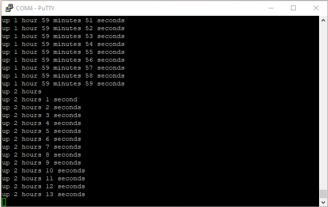

uptime. There is several things I want to straighten up in
uptime.1.c:
main() is using assembly code to wait for interrupt.
Definitively not high level C.
kputu( last) ; puts( ” sec”) ;.
I should have printf( “%u sec\n”, last) ; instead.
kputc() function prototype and the external variable
declaration for uptime should be included as a C header file.
/* system.h -- system services */ extern volatile unsigned uptime ; /* seconds elapsed since boot */ int init( void) ; /* System initialization, called once at startup */ void kputc( unsigned char c) ; /* character output */ int kputs( const char s[]) ; /* string output */ void yield( void) ; /* give way */Next, I make a revision of uplow.1.c by making a copy into uplow.2.c.
I include system.h which is the interface that uplow.2.c implements. I will have several implementations of the same interface, so system.h is not just the interface published by uplow.2.c, it's uplow.2.c which is an implementation of system.h.
#include "system.h" /* implements system.h */I extract the code for puts() as it is a library function that doesn't really belong to the system.
I add the implementation of kputs() and yield().
int kputs( const char s[]) { /* string output */
int cnt = 0 ;
int c ;
while( (c = *s++) != 0) {
kputc( c) ;
cnt += 1 ;
}
return cnt ;
}
void yield( void) { /* give way */
__asm( "WFI") ; /* Wait for System Tick Interrupt */
}
printf() in printf.c.
kputu()
version by adding characters at the beginning of a string.
kputu() takes one additional divider parameter, so it can be
used to print unsigned integer in various format like octal, decimal and
hexadecimal. Current implementation will work for base 8 to 16, it won't
work for binary or base 36.
kputi() outputs signed integer.
printf() implements a subset of the format interpreter: %%,
%c, %d, %i, %o, %s, %u, %x, %X.
/* printf.c -- format and print data */
#include <stdarg.h>
#include <stdio.h>
#include "system.h" /* kputc(), kputs() */
static int kputu( unsigned u, unsigned d) {
char s[ 12] ; /* room for 11 octal digit + EOS */
char *p = &s[ sizeof s - 1] ; /* point to last byte */
*p = 0 ; /* null terminated string */
do {
unsigned r = u % d ;
u /= d ;
*--p = "0123456789ABCDEF"[ r] ;
} while( u) ;
return kputs( p) ;
}
static int kputi( int i) {
int flag = i < 0 ;
if( flag) {
i = -i ;
kputc( '-') ;
}
return flag + kputu( i, 10) ;
}
int printf( const char *fmt, ...) {
va_list ap ;
int cnt = 0 ;
int c ; /* current char in format string */
va_start( ap, fmt) ;
while( ( c = *fmt++) != 0)
if( c != '%') {
cnt += 1 ; kputc( c) ;
} else if( ( c = *fmt++) == 0) {
cnt += 1 ; kputc( '%') ;
break ;
} else
switch( c) {
case 'c':
cnt += 1 ; kputc( va_arg( ap, int /* char */)) ;
break ;
case 'o':
cnt += kputu( va_arg( ap, unsigned), 8) ;
break ;
case 'u':
cnt += kputu( va_arg( ap, unsigned), 10) ;
break ;
case 'x':
case 'X':
cnt += kputu( va_arg( ap, unsigned), 16) ;
break ;
case 'i':
case 'd':
cnt += kputi( va_arg( ap, int)) ;
break ;
case 's':
cnt += kputs( va_arg( ap, char *)) ;
break ;
default:
cnt += 1 ; kputc( '%') ;
/* fallthrough */
case '%':
cnt += 1 ; kputc( c) ;
}
va_end( ap) ;
return cnt ;
}
/* uptime.c -- tells how long the system has been running */
#include <stdio.h>
#include "system.h" /* uptime, yield() */
static void display( unsigned u, const char *s) {
if( u)
printf( " %d %s%s", u, s, &"s"[ u <= 1]) ;
}
int main( void) {
unsigned last = 0 ;
for( ;;)
if( last != uptime) {
unsigned w, d, h, m ,s ;
last = uptime ;
d = h = m = 0 ;
s = last % 60 ;
w = last / 60 ;
if( w) {
m = w % 60 ;
w /= 60 ;
if( w) {
h = w % 24 ;
w /= 24 ;
if( w) {
d = w % 7 ;
w /= 7 ;
}
}
}
printf( "up") ;
display( w, "week") ;
display( d, "day") ;
display( h, "hour") ;
display( m, "minute") ;
display( s, "second") ;
printf( "\n") ;
} else
yield() ; /* Wait for System Tick Interrupt */
}
SRCS = startup.c uplow.2.c uptime.c printf.cUnfortunately, the build fails at the link phase.
$ make f030f4.elf D:\Program Files (x86)\GNU Arm Embedded Toolchain\arm-gnu-toolchain-14.2.rel1-mi ngw-w64-i686-arm-none-eabi\bin\arm-none-eabi-ld.exe: uptime.o: in function `main ': D:\home\Projects\stm32bringup/uptime.c:41:(.text.startup+0xa4): undefined refere nce to `putchar' make: *** [Makefile:53: f030f4.elf] Error 1The linker found a reference to
putchar() at line 41 of
uptime.c.
printf( "\n") ;
I haven't used putchar() in my code and line 41 is a
printf( "\n") that can be optimized to a
putchar( '\n'). This must be some high level C optimization of gcc.
I add the code for putchar() in putchar.c as it is a
standard library function.
/* putchar.c -- write a character to stdout */
#include <stdio.h>
#include "system.h" /* kputc() */
int putchar( int c) {
kputc( c) ;
return c ;
}
Updating Makefile by adding putchar.c to the composition.
SRCS = startup.c uplow.2.c uptime.c printf.c putchar.cThe build now complete successfully.
$ make f030f4.elf text data bss dec hex filename 1317 0 8 1325 52d f030f4.elf f030f4.hex f030f4.binBy checking the map file provided by the linker, I can see that the number of low level modules referred by the code generated by the compiler has increased. Both integer and unsigned division but also some code to handle
switch() statement are now referenced.
Archive member included to satisfy reference by file (symbol)
D:/Program Files (x86)/GNU Arm Embedded Toolchain/arm-gnu-toolchain-14.2.rel1-mi
ngw-w64-i686-arm-none-eabi/lib/gcc/arm-none-eabi/14.2.1/thumb/v6-m/nofp\libgcc.a
(_thumb1_case_sqi.o)
printf.o (__gnu_thumb1_case_sqi)
D:/Program Files (x86)/GNU Arm Embedded Toolchain/arm-gnu-toolchain-14.2.rel1-mi
ngw-w64-i686-arm-none-eabi/lib/gcc/arm-none-eabi/14.2.1/thumb/v6-m/nofp\libgcc.a
(_udivsi3.o)
uptime.o (__aeabi_uidiv)
D:/Program Files (x86)/GNU Arm Embedded Toolchain/arm-gnu-toolchain-14.2.rel1-mi
ngw-w64-i686-arm-none-eabi/lib/gcc/arm-none-eabi/14.2.1/thumb/v6-m/nofp\libgcc.a
(_divsi3.o)
uptime.o (__aeabi_idiv)
D:/Program Files (x86)/GNU Arm Embedded Toolchain/arm-gnu-toolchain-14.2.rel1-mi
ngw-w64-i686-arm-none-eabi/lib/gcc/arm-none-eabi/14.2.1/thumb/v6-m/nofp\libgcc.a
(_dvmd_tls.o)
D:/Program Files (x86)/GNU Arm Embedded Toolchain/
arm-gnu-toolchain-14.2.rel1-mingw-w64-i686-arm-none-eabi/lib/gcc/arm-none-eabi/1
4.2.1/thumb/v6-m/nofp\libgcc.a(_udivsi3.o) (__aeabi_idiv0)

It will take a while to see the days and weeks counts appear, so I will
need to power the board independently from its serial interface. For
test purpose I fast forward the execution by using a bigger value for
the increment of uptime in SysTick_handler().
I didn't expect gcc to optimize calls to high level C functions,
replacing some printf() by putchar(), thus forcing me
to write additional code. So far I am not concerned by execution speed, so this
type of optimization is a bit counter productive.
Next, I will make sure that what belongs to the library category fits in an actual library file.